Patrons de couture gratuits, sans publicité ni inscription
Des patrons sur mesure pour homme et femme, toutes morphologies, calculés à partir de vos mesures.
Composez votre saharienne
Vous choisissez votre style, la saharienne se dessine sous vos yeux. Vous partez de votre taille et affinez vos mesures : du prêt-à-porter au sur-mesure, le patron se calcule. Saharienne homme ou femme, la veste safari utilitaire née de l’uniforme militaire.
Composer ma saharienneNouveau : composez aussi votre bermuda saharienne →Et aussi : des robes, un bermuda, des chapeaux, des poches, cartouchières, épaulettes et pattes de manches.
Nouveautés
- : la poche passepoilée, à rabat ou fendue, droite, inclinée ou verticale.
- : partagez vos mesures et vos patrons par un simple lien.
- : le bermuda saharienne, pour homme et pour femme.
- : la robe saharienne, la saharienne devenue robe.
- : la robe Béa, une robe d’été à composer.
- : composez votre saharienne en direct.
- : béret basque, centré ou asymétrique.
Choisissez une famille
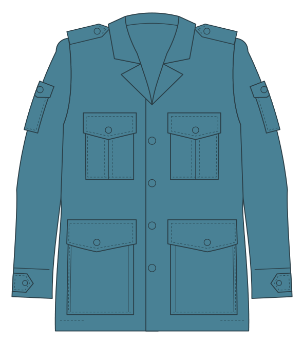
Sahariennes
Manches, poches, cartouchière : à vous de choisir
Difficulté●●●○ à ●●●●
Composer ma saharienne
Robes
Une robe d’été ample, à encolure carrée et décors contrastés, et la robe saharienne, mini ou midi.
Difficulté●●○○ à ●●●○
Composer ma robe
Bermudas
Le bermuda saharienne, pour homme et pour femme : poches cargo, braguette à boutons, revers.
Difficulté●●●●
Composer mon bermuda
Chapeaux
Bob réversible, béret à pétales et béret basque, à votre tour de tête.
Difficulté●●○○
Créer un chapeau
Ces petites pièces se cousent sur la saharienne, ou sur n’importe quelle veste ou chemise.

Poches plaquées
Difficulté●○○○ à ●●●○
Créer une poche

Poches passepoilées
Difficulté●●●○
Créer une poche passepoilée
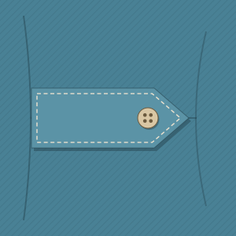
Épaulettes
Difficulté●○○○
Créer des épaulettes
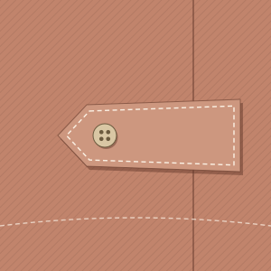
Pattes de manches
Difficulté●○○○
Créer des pattes de manches
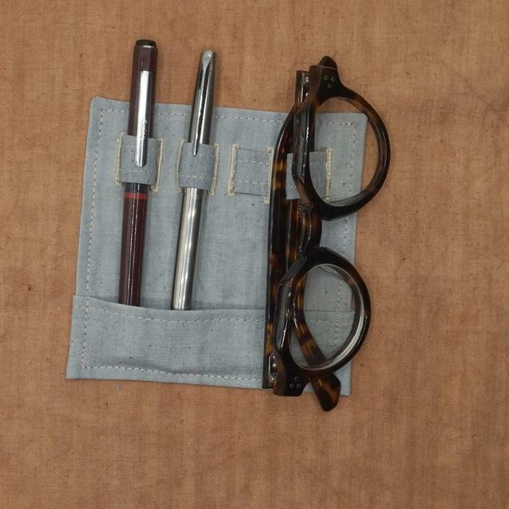
Cartouchières
Difficulté●●○○
Créer une cartouchière
Comment ça marche
- 1Choisissez votre style.Le patron, puis ses options : manches, poches, rabats… Un dessin vous montre le résultat.
- 2Entrez vos mesures.Une par une, avec une illustration explicative. Elles sont sauvegardées sur votre appareil, et nulle part ailleurs.
- 3Téléchargez et cousez.Un PDF A4 à imprimer à 100 %, ou un PDF d’une page pour la vidéoprojection, avec le guide de couture.
- 4Partagez.Vous cousez pour un proche éloigné ? Il saisit ses mesures sur la page du patron et vous les envoie d’un clic, avec « Partager » : vous ouvrez le patron déjà réglé. En savoir plus
Réalisations
Cousues avec les patrons du site. Touchez une photo pour ouvrir son patron.


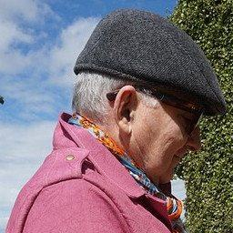
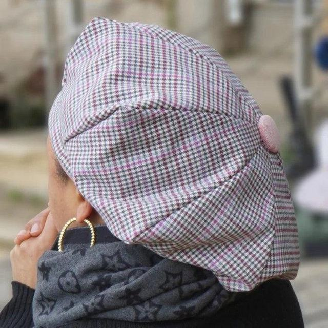
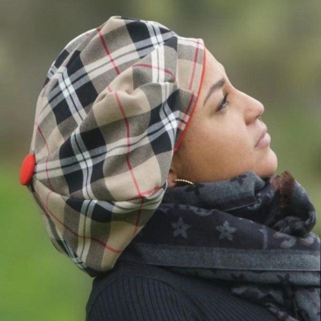
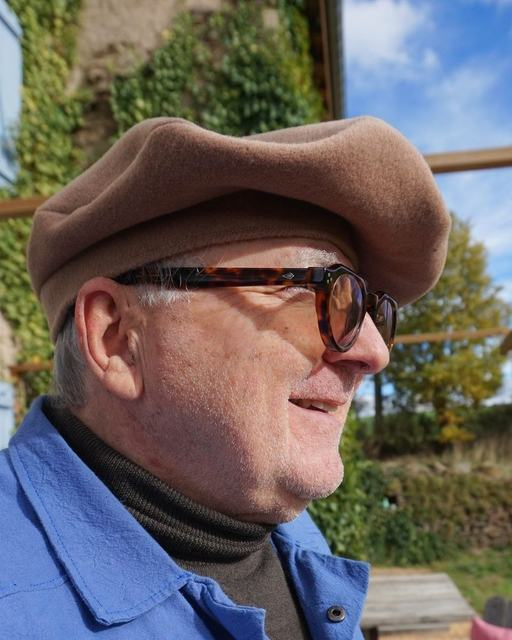
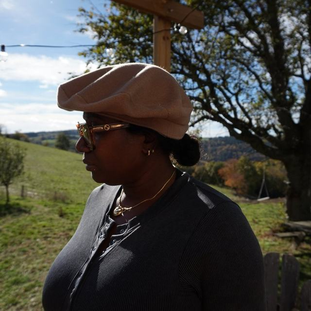


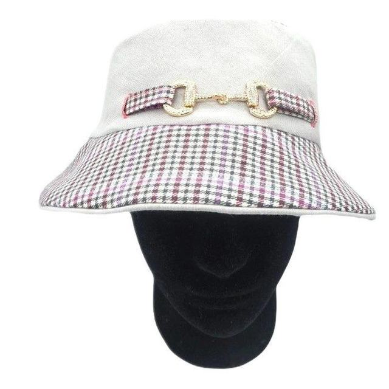
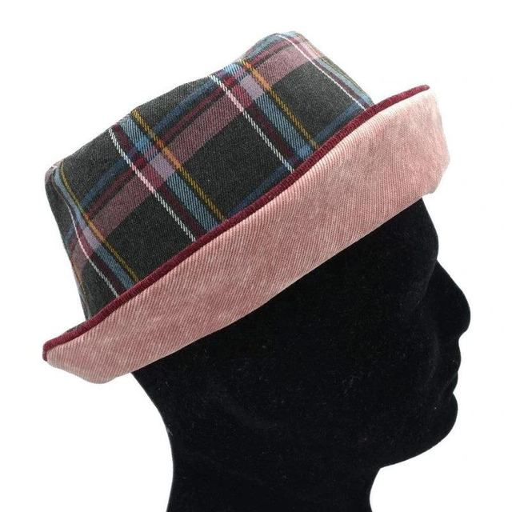

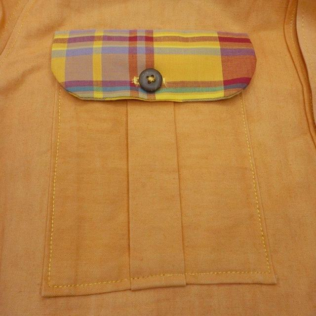
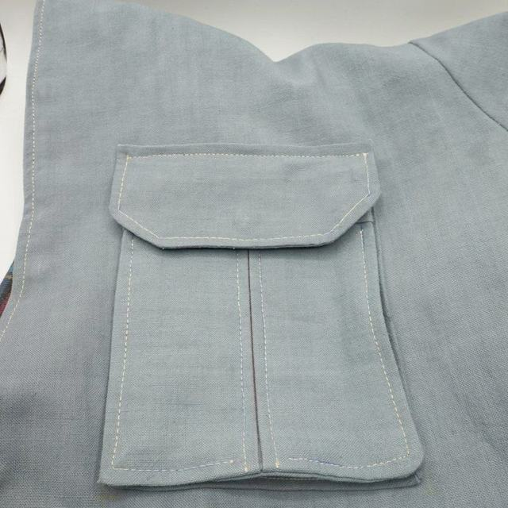
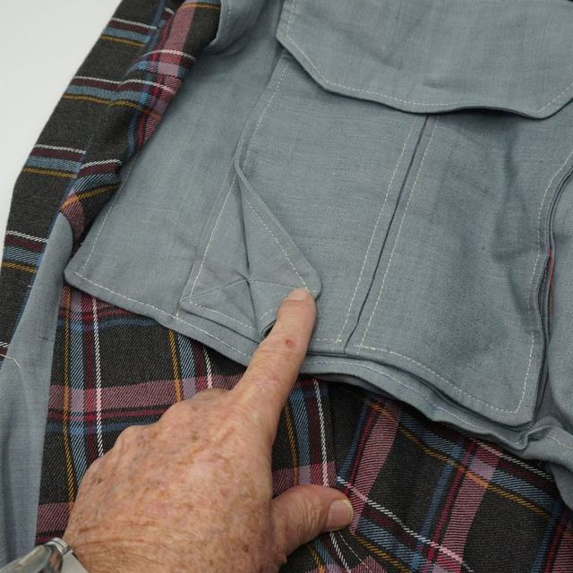


Le site en bref. Des patrons de couture paramétriques, gratuits : des sahariennes à composer, simples ou doublées, pour homme et pour femme ; deux robes, la robe Béa et la robe saharienne ; un bermuda saharien ; des chapeaux (bob, béret à pétales, béret basque) ; et des détails de vêtements (poches plaquées, épaulettes, pattes de manches, cartouchières), avec plus de 100 combinaisons de poches. Vous choisissez votre style et entrez vos mesures : le patron est calculé dans votre navigateur et téléchargé en PDF A4 à l’échelle 1:1, ou en une page pour la vidéoprojection. Un carré de contrôle permet de vérifier l’impression.